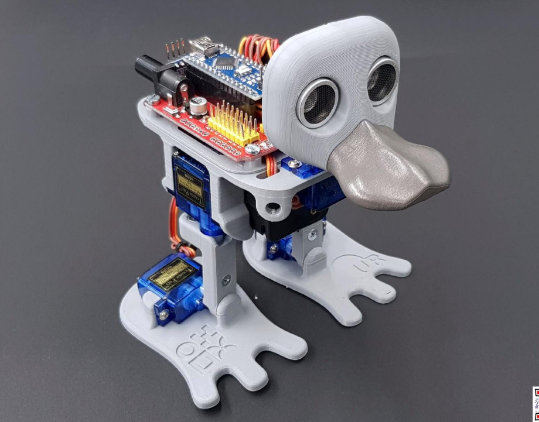
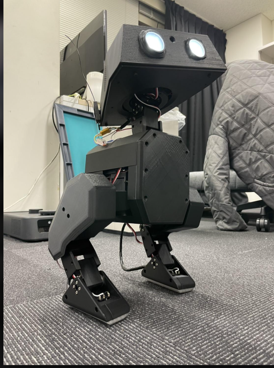
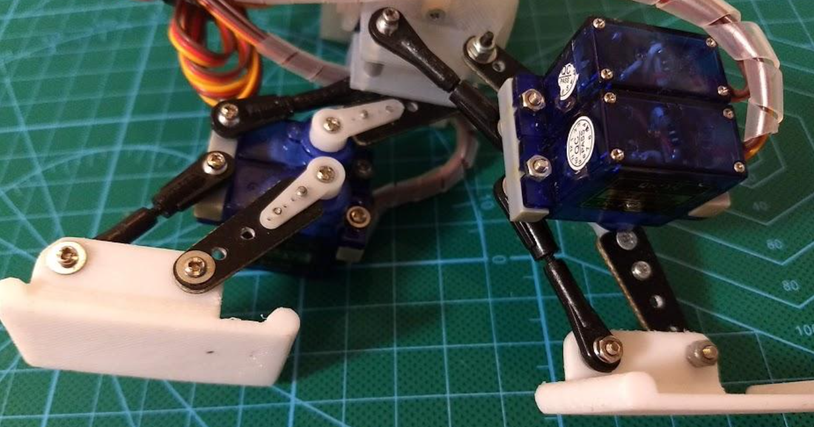
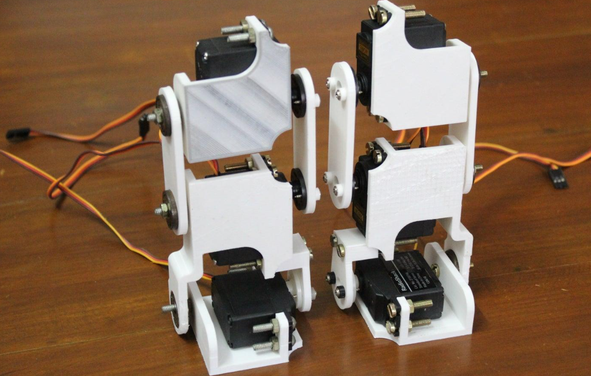

ESP32 Control
ESP32 DevKit V1 works as the main microcontroller for the robot.
VJAYA ROBOTICS PROJECT
ESP32 BIPEDAL ROBOT PROJECTBuild a 25 cm bipedal robot using an ESP32 DevKit V1, six SG90 servo motors and a PCA9685 servo driver. Explore 3D-printed mechanical parts, servo calibration, leg assembly and robotic movement.
Explore ProjectPROJECT OVERVIEW
ROBO DUCK is a 25 cm experimental bipedal robot designed to demonstrate robotics, servo motor control and mechanical movement.
The ESP32 DevKit V1 works as the main controller. A PCA9685 16-channel PWM servo driver controls six SG90 servo motors, with three motors assigned to each leg.
Custom 3D-printed parts form the robot's hip brackets, upper legs, lower legs and feet. The project includes firmware development, servo testing, mechanical assembly and movement experiments.




WHAT IT CAN DO
ESP32 DevKit V1 works as the main microcontroller for the robot.
Three servo motors are assigned to each leg.
Controls six servo motors through individual PWM channels.
Custom-designed brackets, legs, links and feet form the robot structure.
Separate modules handle servo control, walking functions and positioning.
Designed for experimenting with coordinated two-leg movement.
HARDWARE REQUIREMENTS
SOFTWARE REQUIREMENTS
The Arduino firmware is organized into separate files for the main sketch, configuration, servo control, walking and balance-related positioning.
HOW IT WORKS
HARDWARE CONNECTIONS
| Component | Component Pin | ESP32 / Power Connection |
|---|---|---|
| PCA9685 | SDA | GPIO 21 |
| PCA9685 | SCL | GPIO 22 |
| PCA9685 | VCC | ESP32 3.3V |
| PCA9685 | GND | Common GND |
| PCA9685 | V+ | External regulated 5V positive |
| External Supply | Negative | Common GND |
SERVO CONTROL
| Channel | Mechanical Joint | Leg |
|---|---|---|
| CH0 | Hip Roll | Left |
| CH1 | Hip Pitch | Left |
| CH2 | Knee | Left |
| CH3 | Hip Roll | Right |
| CH4 | Hip Pitch | Right |
| CH5 | Knee | Right |
Each servo is controlled through its assigned PCA9685 channel. The initial servo tests confirmed movement on all six channels.
PROGRAM STRUCTURE
Main sketch and program initialization.
I2C pins and servo channel configuration.
Servo initialization and movement functions.
Experimental walking movement functions.
Standing and reset positioning functions.
PROGRAMMING
Download the modular ROBO DUCK Arduino firmware files.
ROBO_DUCK.ino
Download Code ↓ 📄config.h
Download Code ↓ 📄servo_control.h
Download Code ↓ 📄servo_control.cpp
Download Code ↓ 📄walking.h
Download Code ↓ 📄walking.cpp
Download Code ↓ 📄balance.h
Download Code ↓ 📄balance.cpp
Download Code ↓PROJECT DEMONSTRATION
ROBO DUCK Demonstration
Add your actual robot photograph or walking demonstration video here after testing.IMPORTANT INFORMATION